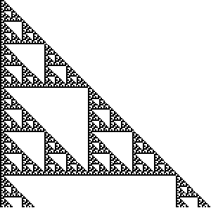
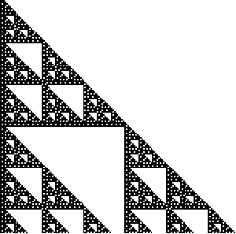

2. Pascal's triangles for
|  |  |
| 1 (mod 2) | 1 or 2 (mod 3) |
On a scale larger than the effect of the original polynomial (three boxes), these
pictures appear similar to those of
This is not surprising, because in both this and the standard Pascal's triangle, the
growth of the polynomials is determined by powers of
Return to Other polynomials Exercises.